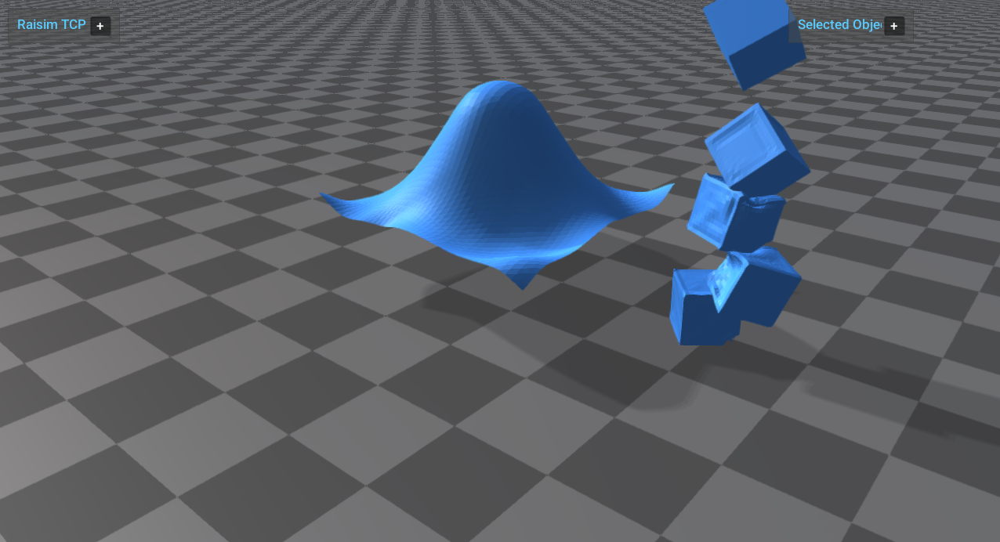

Server Example: Deformable Objects
Overview
Creates a raised soft cloth over a static sphere and also constructs a randomly oriented mesh-based deformable cube stack to the side. The cubes use resampled OBJ surface particles with automatically generated internal struts so they share the same volumetric behavior.
Use this example as the starting point for soft-body setup. It shows explicit cloth topology and deformable mesh construction from closed OBJ meshes.
{kind=link}

Target
CMake target: deformable_objects.
This example is only built when the installed RaiSim package exposes
raisim::DeformableObject.
Run
Run the build-tree executable:
./build-examples/examples/deformable_objects
On Windows, run deformable_objects.exe instead.
This example uses RaisimServer. Start rayrai_tcp_viewer and connect to port 8080.
Details
Demonstrates
World::addDeformableClothwith explicit vertices and triangle indices.Demonstrates OBJ particle generation and automatic internal struts.
Generates deterministic random cube orientations at startup, so repeated runs show the same pile while still exercising non-axis-aligned contacts.
Uses
MeshParticleOptions::spacingso RaiSim resamples the mesh surface and builds a dense particle/sphere contact proxy instead of relying only on the raw OBJ vertices. During mesh loading, RaiSim also raises the deformable collision radius to at least0.58 * spacingso the generated spheres cover the surface without particle-scale holes.Uses
distanceComplianceandbendCompliancefor the cloth, anddistanceComplianceplus internal struts for the mesh objects.Tunes the cloth to be highly deformable, with high bend and stretch compliance so it visibly sags and wraps around the sphere.
Uses identical mesh settings for every cube and low-restitution contact material pairs so impacts settle without bouncing.
Keeps the generated cloth and cube particle counts moderate so the example remains interactive while still showing visible deformation.
Writes temporary closed cube OBJ files in the current working directory at startup and removes them on exit, so no extra mesh asset is required.
Construction modes
The example covers:
Cloth: user-provided vertices and triangle indices define a sheet. This is the right model for flags, hanging cloth, and thin surfaces.
Mesh object: particles are generated from a closed OBJ mesh and connected with internal struts. This is the starting point for deformable objects that should compress and spring back.
Material parameters
The material controls the XPBD/PBD response:
distanceCompliancecontrols stretch resistance.bendCompliancecontrols bending resistance for cloth-like surfaces.distanceCompliancealso controls the elastic response of the mesh-based cubes in this example.
Lower compliance means stiffer constraints. Use lower-resolution settings for performance comparisons when increasing particle count or decreasing compliance.
The cloth in this example uses deliberately soft values so it visibly sags and
wraps over the raised sphere. The mesh-based deformable cubes are stacked to
the side without obscuring the cloth-sphere interaction. The cube material uses
mesh internal struts, damping, and low-restitution contact material pairs so
the dropped cubes deform, settle, and recover without excessive bouncing. The
example sets the cube collisionRadius from the requested particle spacing.
For a stiffer fabric, reduce
distanceCompliance and bendCompliance or increase the solver iteration
count.
Visualization
This example uses RaisimServer. Start rayrai_tcp_viewer before running it:
./build-examples/examples/rayrai_tcp_viewer
./build-examples/examples/deformable_objects
The visualizer receives dynamic deformable topology and vertex updates through the server stream.